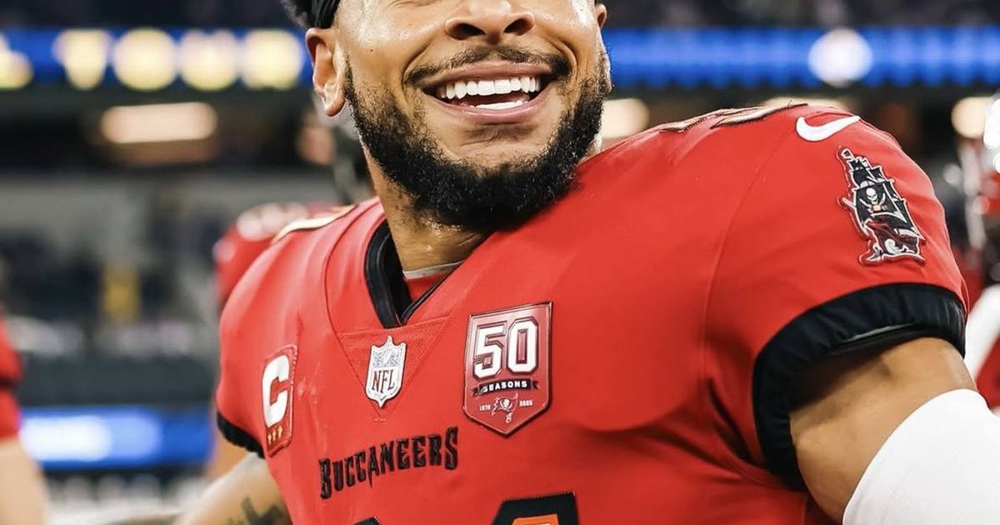

Antoine Winfield Jr. out 2-4 weeks with rib fracture
Tampa's star safety fractured a rib late Sunday. He's out 2-4 weeks — and Thursday's matchup just tilted.

Disclosure: this post contains affiliate links. I earn a commission on qualifying purchases.
The injury
Antoine Winfield Jr. suffered a rib fracture late in Sunday's 17-14 loss to Green Bay, and Tampa ruled him out for Thursday after Monday's walkthrough. He's expected to miss 2-4 weeks.
Why it tilts Thursday
Dallas averages +0.617 EPA per target on intermediate throws — the exact area a missing free safety is supposed to erase. Without Winfield patrolling the middle, the Cowboys' most efficient zone gets even more efficient.
### By the numbers
• Bucs intermediate defense without him: +0.741 EPA/target allowed
• Winfield tackles this season: 24 in 4 games
• Expected absence: 2-4 weeks
Gear up: [Fanatics](https://fanatics.93n6tx.net/WOLjqe) via Fanatics